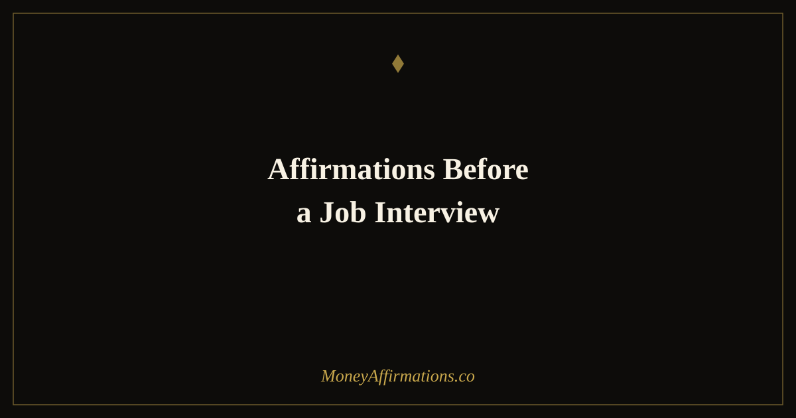

50 Affirmations Before a Job Interview for Confidence and Calm

Job interviews bring out some of the most acute anxiety most people will ever feel in a professional setting. You are being evaluated, compared, and judged — all at once, in real time. No matter how well you have prepared your answers, if your nervous system is in a threat state when you walk through that door, your best thinking stays locked away and a more anxious, hesitant version of you shows up in its place.
Affirmations before a job interview work differently from interview prep. They do not help you memorize better answers. They change the internal state you bring into the room. When you genuinely feel worthy of the opportunity, your body language opens up, your voice steadies, and you listen more than you perform. Interviewers can feel the difference. This ritual is designed to take you from the night before through to the moment you leave the building — one affirmation at a time.
What are job interview affirmations?
Job interview affirmations are present-tense, first-person statements that reinforce your belief in your own competence, value, and readiness before entering a high-stakes evaluation. Unlike general confidence affirmations, pre-interview affirmations are specifically designed to counteract the particular type of anxiety that interviews produce: the fear of being assessed and found lacking.
They work by interrupting the cognitive distortions that show up before interviews — catastrophising about rejection, undervaluing your own experience, or treating the outcome as a referendum on your worth as a person. By replacing those thoughts with grounded, truthful statements about your preparation and value, you create a mental environment where your genuine capability can come through. They are most effective when used as a timed ritual rather than a last-minute scramble.
50 affirmations before a job interview
Use each group at the moment it describes. The sequence is designed to move you from pre-interview anxiety the night before, all the way through to the grounded feeling of knowing you showed up as yourself.
The night before — settle your confidence
- I have prepared well and my preparation is enough.
- I am proud of the experience I bring to this interview.
- I release the need to be perfect and embrace the power of being genuine.
- I rest tonight knowing I am ready to show up fully tomorrow.
- I am exactly the kind of candidate this role needs.
- My skills and experience are real, valuable, and worth communicating.
- I let go of every "what if" and trust myself completely.
- I sleep soundly, and I wake up refreshed and clear-minded.
- I deserve this opportunity and I am ready to claim it.
- My mind is calm, my heart is open, and I am prepared for tomorrow.
Morning of the interview — set your energy
- Today I show up as my most confident, capable self.
- I am well-rested, focused, and ready to perform at my best.
- Everything I need to succeed today is already inside me.
- I walk into this interview knowing my own worth.
- I communicate clearly, warmly, and with genuine confidence.
- I am not just looking for a job — I am finding the right fit for both of us.
- My experience speaks for itself and I speak for my experience.
- I am calm, collected, and fully present for this moment.
- I attract opportunities that align with my goals and my values.
- Today is a great day for a career breakthrough.
On your way — prime your presence
- With every breath I take, I feel more grounded and at ease.
- I am walking toward an opportunity that is right for me.
- I am approachable, likeable, and easy to connect with.
- The right words come to me naturally when I speak about my work.
- I carry myself with quiet confidence in everything I do.
- I am excited about this conversation and what it could lead to.
- I make a strong first impression because I show up as myself.
- My energy is positive, warm, and professional.
- I am arriving at exactly the right place at exactly the right time.
- I am fully present and genuinely interested in this opportunity.
In the waiting room — ground your nerves
- I breathe slowly and my body relaxes with every exhale.
- Nerves are just excitement — and I am excited about this.
- I am safe, I am ready, and I am enough.
- I have done the work to be here and I deserve to be here.
- Right now, in this moment, I am completely capable.
- I answer questions with clarity, honesty, and confidence.
- I am not here to be judged — I am here to have a conversation.
- The interviewers want me to succeed because it helps them too.
- Whatever happens in the next hour, I am proud I showed up.
- I am grounded, present, and ready to bring my best.
After the interview — seal your worth
- I showed up, I spoke my truth, and I am proud of myself for that.
- I demonstrated real value in that conversation.
- Whatever the outcome, my worth is completely intact.
- I communicated my experience and my potential clearly and well.
- One interview does not define my career — my commitment does.
- The right opportunity is finding its way to me right now.
- I grow stronger and more confident with every experience like this.
- I release attachment to the outcome and trust the process completely.
- I am building a career that reflects who I truly am.
- I did my best today, and my best is genuinely good enough.
How to use these affirmations
The key to this ritual is timing. These affirmations are not meant to be read once the night before and forgotten. They are designed to work as a continuous thread of self-support that runs from the moment you start feeling pre-interview anxiety through to the walk home after.
The night before, read through groups one and two slowly — out loud if you can. Say each statement as if you mean it, even if you have to work at it. In the morning, return to group two while you get ready. Read group three on the way — in the car, on transit, or during a walk. Once you arrive, sit quietly with group four for five minutes before you are called in. Keep the page open if it helps.
After the interview, no matter how you feel it went, read group five. This is not about denial — it is about not allowing a single conversation to hollow out the confidence you have built. Say each affirmation slowly and let it land. Then close the page and let the process unfold.
The psychology of interview anxiety — and why self-affirmation changes outcomes
Interview anxiety is not simply nervousness. Research by Claude Steele and Joshua Aronson into stereotype threat shows that when people feel their core identity is being evaluated — not just their skills, but who they are — cognitive performance measurably drops. The working memory load of managing that threat leaves less mental bandwidth available for the actual task. This is why you can know the perfect answer in preparation but go blank when asked the question in the room.
Self-affirmation theory offers a powerful counter. Studies by Geoffrey Cohen and David Sherman show that affirming a valued aspect of your identity before a high-stakes performance — not the skill being evaluated, but something you genuinely care about — reduces the psychological threat response and restores cognitive performance. In practice, this means that affirming your commitment to growth, your care for the people around you, or your pride in your experience can measurably improve how you perform under evaluation pressure.
The physiological effect is equally real. Research on cortisol and performance anxiety consistently shows that self-affirmation practices reduce cortisol output before high-stakes events. Lower cortisol means a steadier voice, more fluid thinking, and better access to the language centres of the brain — all of which directly affect how you come across in an interview room. You are not faking confidence. You are removing the chemical interference that was hiding it.
Erving Goffman's impression management theory adds another layer: interviews are performative, and the most successful candidates are those who manage to perform authentically rather than performing a character they do not believe in. Affirmations help close the gap between who you really are and who shows up under pressure.
Tips to make them work faster
- Say them aloud: Spoken affirmations activate the auditory processing system and create a stronger neurological imprint than reading silently. Even a whisper counts.
- Use your name: Research by Ethan Kross shows that self-talk using your own name — "You've got this, [name]" — creates psychological distance from anxiety and improves performance under pressure.
- Pair with slow breathing: Affirmations land deeper when your nervous system is already partially regulated. Take three slow breaths before you begin each group.
- Start the night before, not the morning of: Beginning the ritual early means your subconscious has more time to absorb the framing before the high-pressure moment arrives.
- Write one down on paper: Choose one affirmation from group four and write it on a small piece of paper to hold in your pocket during the interview. Touching it is a physical anchor for everything you have built.
Frequently asked questions
How early before an interview should I say these affirmations?
Start the night before — that is when anxiety tends to peak. The ritual is designed to work across multiple time points: the night before, the morning of, on your way, in the waiting room, and immediately after. Using affirmations at each stage means you are continuously resetting your nervous system rather than trying to calm a full panic attack five minutes before you walk in.
What if I am really under-qualified for the job?
Affirmations work on your belief in your own potential, not on falsifying credentials. If you are stretching for a role, affirmations help you communicate your transferable strengths with more confidence and less apologetic framing. Research on interview performance shows that confidence and articulateness often count as heavily as direct experience — especially at the screening stage. Showing up believing you have value to offer is not dishonest; it is strategically accurate.
Can affirmations help with salary negotiation in the interview?
Yes. The affirmations in the waiting room and after-the-interview groups are particularly useful for salary conversations because they reinforce your worth independent of the outcome. If a salary negotiation comes up unexpectedly, the grounded identity work you have done with affirmations means you are less likely to accept the first number out of anxiety. Pair these with the affirmations in our guide to asking for a raise for a complete negotiation mindset toolkit.
A job interview is not a verdict on your value as a person. It is a conversation between two parties deciding whether to work together. When you arrive already knowing your own worth — because you have spent the last 24 hours reinforcing it — you show up as someone who is genuinely worth hiring. Explore the full money affirmations collection to build the kind of financial confidence that carries you beyond any single interview, and read our guide to affirmations for career growth for a longer-term mindset practice.